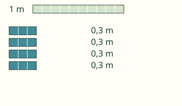
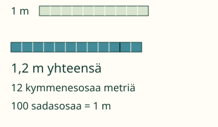
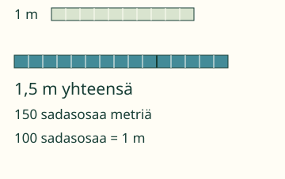
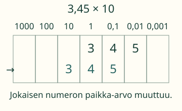

Aava: 4 nauhaa, kukin 0,3 m.
Laske nauhojen yhteispituus.

Miksi 4 × 0,3 on enemmän kuin 1 mutta vähemmän kuin 2? Mieti ennen yhdistämistä.
Esimerkit ja selitykset
Osan koko säilyy
4 × 0,3 m = 12 kymmenesosaa metriä = 1,2 m. Tulos ei ole 12 metriä: pieni osa on yhä 0,1 m.

Sadasosat ja uusi tilanne
Kuusi 0,25 metrin nauhaa: 6 × 25 sadasosaa = 150 sadasosaa = 1,5 m. Kymmenen sadasosaa on yksi kymmenesosa.

Kymmenkertainen määrä
3,45 × 10 = 34,5. Jokaisen numeron paikka-arvo on kymmenkertainen: esimerkiksi 3 ykköstä muuttuu 3 kymmeneksi. Emme liimaa nollaa desimaalien loppuun.

Kokeile itse
Voit vastata suoraan. Kuvaa tai apua saa käyttää.
Apua laskemiseen
Laske ensin pieninä osina: 3 × 0,4 on 3 × 4 kymmenesosaa. Osien määrä muuttuu, osan koko ei. Voit laskea myös 0,4 + 0,4 + 0,4.
Luvun lopun nollat eivät muuta arvoa: 0,5 = 0,50. Voit kirjoittaa myös pisteen tai tarkan murtoluvun, kuten 1/2.
Mitä lukuja voin kokeilla?
Ensimmäinen määrä 0–999, enintään kolme desimaalia. Ryhmien määrä kokonaislukuna 0–1000. Nolla ryhmää antaa nollan ja yksi ryhmä säilyttää määrän. Yksikkömuunnoksessa annettua kerrointa ei voi vaihtaa.
Lisähaaste: perustele
Kumpi antaa enemmän nauhaa: 6 × 0,25 m vai 3 × 0,5 m? Voitko nähdä saman määrän erikokoisina ryhminä?
Katso perustelu
Laske tai piirrä; molemmissa on 1,5 m.
Opettajalle ja ilman ruutua
Vuosiluokat 3–6. Ryhmä on kertolaskun luonnollinen kerroin, ei mittayksikkö. Kertominen nollalla antaa nollan ja yhdellä säilyttää määrän. Väite ”kertominen aina suurentaa” ei käy näihin. Kirjallinen kertolaskualgoritmi on vahva tuki, ei uusi aloitusportti. Osittainen ryhmämallin katsominen ei osoita itsenäistä laskemista.
Leikkaa metrin paperinauhasta 0,3 metrin malleja. Aseta neljä mallia peräkkäin. Säilytä sama metrin vertailunauha. Mittaustarkkuus ja välineiden käyttö tarkistetaan aikuisen kanssa.
Palaute on tämän sivun laskutukea. Tekninen syöteraja on128 merkkiä, murtoluvun osissa24 numeroa ja desimaalissa12 merkitsevää desimaalipaikkaa. Rajan ylitys hylätään, ei pyöristetä. Vastauksia ei tallenneta, eikä sivu arvioi oppilaan muistamista tai itsenäistä hallintaa. Pelireittejä ei tässä väitetä varmennetuiksi.
Lähtökysymys: Mitä 0,7 × 1 ja 0,7 × 0 tarkoittavat nauhoina?